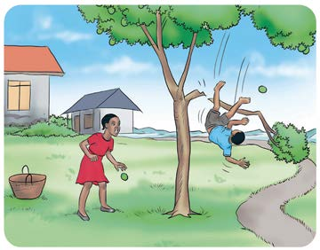
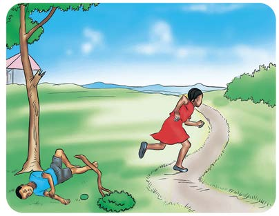
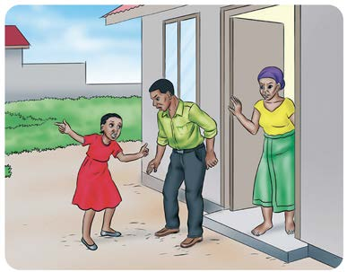
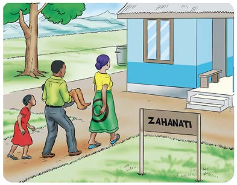
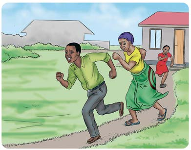
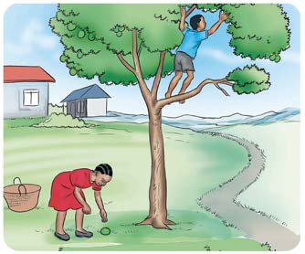

Chunguza mfululizo wa picha au mchoro mguso, kisha andika habari fupi kwa mtiririko sahihi; tumia eneo la kuandikia, kibodi au Breli.






Shughuli ya nne Andika habari fupi kuhusu kitu unachokipenda. Zingatia mtiririko sahihi wa matukio.
Chunguza mfululizo wa picha au mchoro mguso, kisha andika habari fupi kwa mtiririko sahihi; tumia eneo la kuandikia, kibodi au Breli.






Andika habari fupi kuhusu kitu unachokipenda kwa mtiririko sahihi wa matukio; tumia eneo la kuandikia, kibodi au Breli.